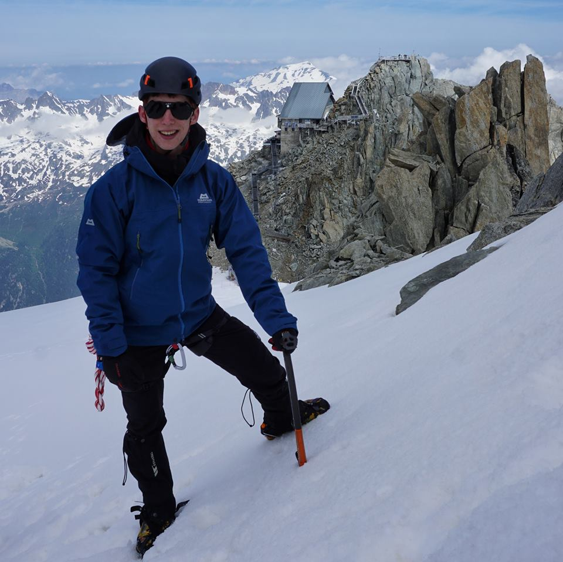
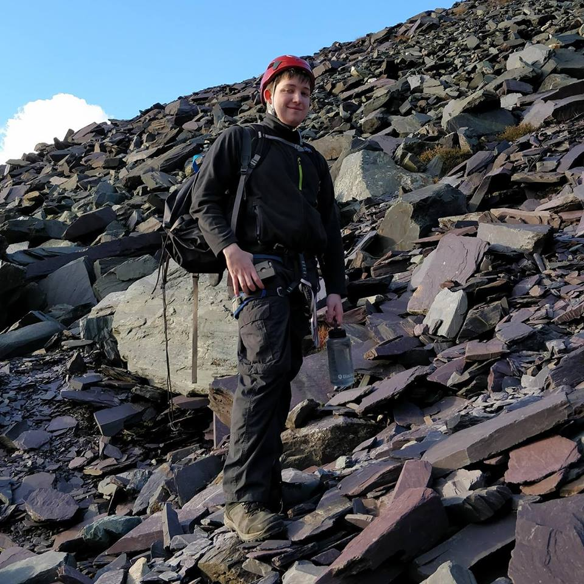

President
Michael Sykes

I stumbled across this society last September and soon became addicted to all things climbing and had an amazing time with CUMS. I’m looking forward to another year of the epic trips we’ve planned!
Secretary
Isaac Wheatley
I've tried most things outdoorsy, with my favourites being mountain biking and skiing. I had never really got into climbing until I joined CUMS; which soon shot mountaineering into the limelight. From there I have progressed into a mini-adventure (5ft 7in) and thus opted for a role in the exec to help fulfil other people’s passions for the great outdoors.
Treasurer
Alex Duxbury
I'm an experienced hiker, having hiked throughout most of the UK, but I was only introduced to climbing through CUMS and I’ve fallen in love with it. I'm looking to pass on the enjoyment that I have experienced so far to new members of the society whether experienced or brand new to the sport of climbing, hiking, or anything else we do!